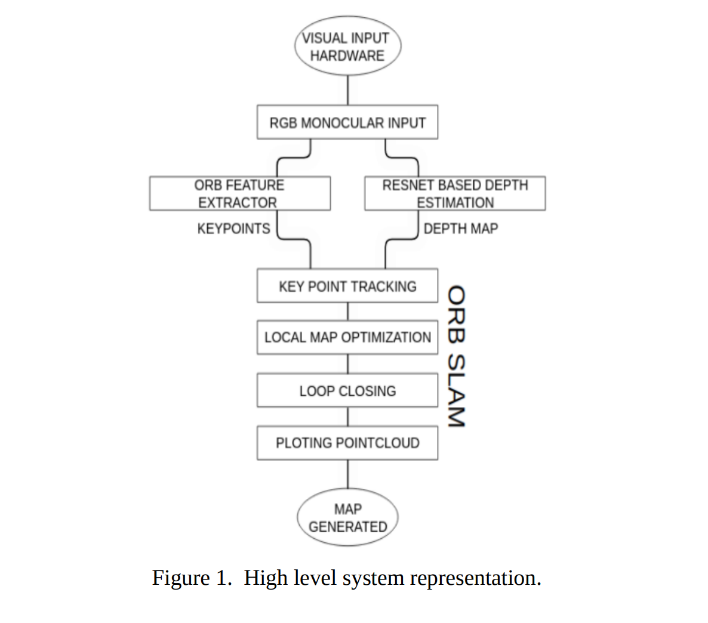
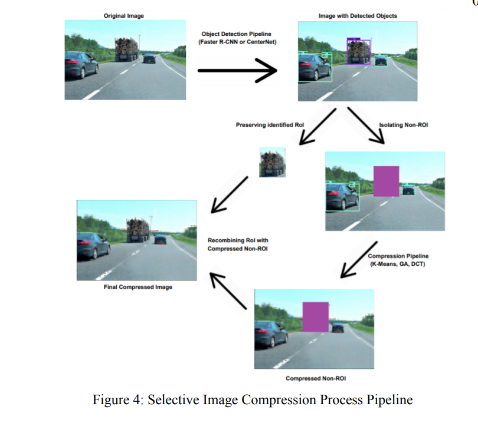

ExpReS-VLA: Specializing Vision-Language-Action Models Through Experience Replay and RetrievalICRA '26
IEEE International Conference on Robotics and Automation (ICRA) 2026
Rapid on-device specialization of pre-trained VLAs via compressed experience replay and retrieval-augmented generation — preventing catastrophic forgetting while adapting in ~31s from 12 demos.

Depth Reconstruction Based Visual SLAM Using ORB Feature Extraction
Journal of Images and Graphics, 2022
Deriving depth from a monocular input and fusing it with extracted keypoints to be processed by ORB-SLAM.

Development and Deployment of a Hybrid Controller for a Dual-Axis Solar Tracker System
Intl. Conf. on Electrical, Computer, Communications & Mechatronics Engineering (ICECCME) 2022
A hybrid controller combining astronomical open-loop control with differential-flatness-based control over a photovoltaic panel for a mobile street-vending cart.

Selective Lossy Image Compression for Autonomous Systems
XXIII Symposium on Image, Signal Processing and Artificial Vision (STSIVA) 2021
Coupling object detection with selective lossy compression to speed up downstream image operations and cut memory needs in self-driving applications.